General Overview
Materials Management. Az anyaggazdálkodás közvetlenül az SAP menüben lévő a Logisztika (Logistics) mappában található.

Az anyaggazdálkodás (Materials Management) legfontosabb feladata 2-es számlaosztályba tartozó anyag- és árukészlet részletes nyilvántartása. A modul elsősorban az alábbi mérlegelemeket és számlaosztályokat fedi le.

Másodsorban azonban lehetőség van 5-ös számlaosztályba tartozó, azonnali felhasználású, tehát nem továbbszámlázott szolgáltatások nyilvántartására.
Purchasing. A készlet beszerzését, a készletek beáramlását segíti a beszerzési modul (Purchasing), amely a beszerzési igénylés (Purchase Requisition), a beszerzési rendelés (Purchase Order), a szerződés (Outline Agreement), az árajánlat (RFQ/Quotation), valamint a törzsadat (Master Data) részmodult tartalmazza. A beszerzési modul üzemeltetése elsősorban a beszerzési osztályok és csoportok feladatkörébe tartozik. A készletek, illetve a tovább számlázott szolgáltatások mellett lehetőség van 5-ös számlaosztályra beszerezni azonnali felhasználású szolgáltatásokat, illetve 1-es számlaosztályra beszerezni tárgyi eszközöket.
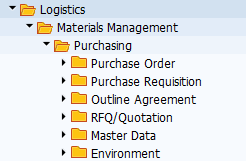
Inventory Management. A készlet mozgatását, az anyagáramlás alapszintű szabályozását a készletmenedzsment modul látja el. Legfontosabb területei az anyagmozgatás (Goods Movement), az anyagbizonylatok (Material Document) és az anyagfoglalások (Reservation). A modul üzemeltetéséhez elsősorban a készletkezelési feladatok ellátó csoportoknak van jogosultsága.
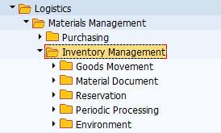
Logistics Invoice Verification. A beszerzési folyamatok, különösen a készletrendelések könyvelését a LIV modul látja el. Az elnevezése arra utal, hogy a modulban lehet könyvelni a logisztikai előzményekkel rendelkező szállítói számlákat. A modulban a Document Entry mappában van lehetőség a számlák iktatására és könyvelésére, az Automatic Settlement mappa a költségek (pl.: szállítási, rakodási, stb.) szétosztást támogatja, a GR/IR Account Maintance mappában az áru/számla beérkeztetést időben elhatároló főkönyvi számla menedzselését segíti.

Physical Inventory modul az anyag- és árukészlet leltározását segíti. Ebben a modulban hozhatók létre leltárbizonylatok (Physical Inventory Document), végezhetők el készletszámítások (Inventory Count) és az eltérések kezelése (Difference).
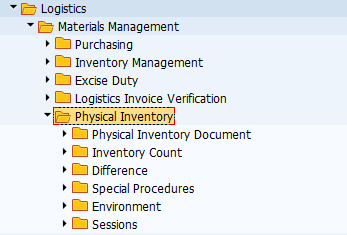
Valuation modul a készlet értékelésére vonatkozik, és segédkönyveket használ. A Change in Material Price követi az anyagok értékben bekövetkezett változásokat. A Balance Sheet Valuation a mérleg / vagyonelemek szerinti értékelést számítja ki. Az ezen belül lévő mappák különböző számítási lehetőségeket tartalmaznak: legalacsonyabb költség meghatározása (Determination of Lowest Value), LIFO szerinti és FIFO szerinti értékelés, valamint ezek eredményei (Results). További értékelési lehetőséget tartalmaz a Balance Sheet Valuation with Material Ledger, és a Actual Costing/Material Ledger.

Service Master modullban a jellemzően 5-ös számlaosztályra, költségnemre és költséghelyre könyvelendő szolgáltatásokat lehet nyilvántartani.

A szolgáltatás (Service) mappában lehet felvinni, megtekinteni és módosítani a szolgáltatások törzsadatait. A Standard Service Catalog-ban a szolgáltatásokból lehet katalógusokat, nyilvántartásokat létrehozni.
Material Master modulban lehet létrehozni olyan anyagokat, árukat és közvetített szolgáltatásokat, amelyek II/1 mérleg osztályba, illetve a 21-28-as számlacsoportba tartoznak.

Material mappában lehet felvinni, módosítani, megtekinteni anyagokat, árukat, tovább számlázott szolgáltatásokat. A Profile mappában lehet létrehozn az automata beszerzési igények összeállítása miatt is lényeges MRP és Forecast Profile-okat (ezeket később az anyagokhoz lehet rendelni. A Batch mappában a sarsz számok beállítására van lehetőség. A Special Stock mappában konszignációs szállítói készletekkel kapcsolatos tranzakciók érhetők el.
Lendvai Tamás
Beszerzési modul (Purchase)

A modulban található szerződések, árajánlatok, beszerzési igények és rendelések elsősorban a 2-es számlaosztályba tartozó anyag- és árukészletbe sorolható vagyonelemekre vonatkoznak. Emellett lehetőség van 5-ös számlaosztályra is beszerezni, illetve költségként elszámolni szolgáltatásokat és anyagokat, valamint az 1-es számlaosztállyal kapcsolatban tárgyi eszközöket rendelni.

Az alábbiakban a szinte valamennyi beszerzési tranzakció közös elemeit tekintjük át.
Tétel kategóriája (Item Category). A szerződésekre, beszerzési igényekre és rendelésekre vonatkozó tranzakciók egyik közös tulajdonsága, hogy az alábbi beszerzési konstrukció nyilvántartására alkalmasak.

Standard: alapanyag beszerzése a szállítótól (a szállító késztermékét, vagy a tovább számlázandó szolgáltatását vásároljuk meg).
Consignment: a konszignációs készletre vonatkozó igénylés során a szállító által leszállított áru egészen addig a szállító tulajdonában marad, amíg nem adjuk ki a termelésre. Gazdasági esemény az anyag termelésbe történő kiadásával történik, ebben az időpontban kell a szállítói számlát is lekönyvelni. A konszignációs készlet a „beszállítók által vezérelt készletek (VMI Vendor Management Invantory) típusába tartozik." A konszignációs készletek esetében a vevő, tehát ebben az esetben mi „csak a felhasznált mennyiség után fizet. … A konszignációs készletek olyan készletek, melyeket a beszállító a vevői megrendelések alapján a vevő rendelkezésére bocsát, de egy későbbi időpontban történik meg a fizetés és a beszállított ám tulajdonjogának az átadás. A vevő csak a felhasznált, a gyártásnak átadott mennyiségeket fizeti ki a beszállító részére." Oláh J. & Vad V. A konszignációs készletek jellemzői az ellátási láncban. Vezetéstudomány. (15)8. 67-76. pp. https://core.ac.uk/download/pdf/161069385.pdf (2021. január 20.)
Subcontracting esetében a bérmunkáról, illetve alvállalkozói szerződésről van szó. Az alapanyagot, vagy a félkészterméket a szállítónak adjuk megmunkálásra, majd a művelet végén a szállító visszaszolgáltatja azt.
Third Party:
Stock transfer: az anyagot a szervezeten belül mozgatjuk, pl.: üzemek között, ebben a relációban lesz jelentősége a Plant / Supply Plant összefüggésének.
Service: jellemzően olyan törzsadatokkal rendelkező szolgáltatás, amelyet 5-ös számlaosztályra és költséghelyre könyvelünk.
Kontírozási kategória. (Account Assignment). A tranzakcióknak alkalmasak többek-között (A) tárgyi eszközzel, (C) értékesítéssel (vevői megrendeléssel), (F) gyártási rendeléssel, (K) költséghellyel, (P) projekttel kapcsolatban létrehozni rendelési bizonylatokat.

1. Beszerzési igény (Purchase Requisition)
1.1. General Overview
A beszerzési igénylés moduláris felépítése és elhelyezkedése az SAP navigációs menüjében

Beszerzési igénylés modul felépítése szerint a Logisztika \ Anyaggazdálkodás \ Beszerzés könyvtár főkönyvtárban lévő tranzakciókból és alkönyvtárakban elhelyezkedő tranzakciókból áll. A főkönyvtárban elérhető ME51-ennel egyedileg hozhatunk létre, az ME53N-nel egyedileg módosíthatunk, az ME53N-el egyedileg tekinthetünk meg igényléseket. Az MEMASSRQ-val tömegesen tudunk megtekinteni és szerkeszteni már elkészített igényléseket. A Release mappában az elkészült igényléseket hagyhatjuk jóvá egyedileg, vagy tömegesen. A List Displays-ban különböző lekérdezések és kimtatások érhetőek el, valamint listák generálhatóak, ahonnan szintén elérhetőek az egyes anyagigénylések megtekintésre és szerkesztésre. A Follow-On-Functions keretében további műveletek érhetők el, pl.: az igénylések megfelelő beállítás esetén megrendelésekké konvertálhatók.
A beszerzési igények fontosabb jelllemzőjük
Tárgyuk szerint a beszerzési igények elsősorban az anyag- és árukészletbe tartozó javakra, tovább számlázott szolgáltatásokra, tárgyi eszközökre, valamint azonnal felhasználású anyagokra és szolgáltatásokra adhatók le.
Létrehozásukat meghatározza, hogy a gyártási folyamatok részeként jönnek létre, vagy attól függetlenül. Amennyiben tervezett gyártási folyamatról van szó, úgy a gyártásvezérlés (Production Order), valamint az MRP folyamatok hozzák létre automatikusan. Ezzel szemben a gyártási folyamatokon kívüli, eseti eljárások keretében manuálisan létrehozhatunk beszerzési igényeket. Hasonló eset, amikor egyedi tárgyi eszközre adunk le igénylést. Egy másik lehetőség, ha a munkavállalók a napi munkavégzésükhöz szükséges eszközökre, anyagokra adnak le belső rendelési igényeket, pl.: katalógusok használatával.
Környezetük az igényléseket beszerzési, felhasználási, tárolási és számviteli környezetbe sorolható objektumok veszik körül.
Forrásuk szerint a beszerzési igénylések készülhetnek korábban létrehozott beszerzési igénylésekből, azonban a beszerzési rendelésektől eltérően szerződések, megállapodások, stb. nem alapozhatnak meg beszerzési igényeket.
Felhasználásuk szerint a beszerzési igénylésekkel megalapozhatók, alapadataival létrehozhatók beszerzési rendelések, árajánlatok, keretszerződések, ütemezései megállapodások.
Kapcsolódásuk szerint igénylésekhez kapcsolhatók szerződések, megállapodások, és beszerzési infó rekordok, valamint szállítók is.
Beszerzési igények elhelyezése a magyar standard számlatükörben és a mérlegben:
Megállapítható, hogy beszerzési igényeket elsősorban a forgóeszköz mérlegosztály készleteibe tartozó anyagokra és árukra adunk le a gyártási folyamat részeként. Az anyagok esetében a gyártáshoz szükséges alapanyagok, segédanyagok, üzemanyagok és fenntartási anyagokról lehet szó (többnyire), az áruk esetében a változatlan formában értékesíteni kívánt kereskedelmi áruk és a tovább számlázott szolgáltatások igénylése merülhet fel. A mérleg tekintetében, beszerzési igényléssel eszköz, különösen anyagtartalommal rendelkező tárgyi eszköz megrendelése is megalapozható. Befektetett pénzügyi eszközök és immateriális javak nem képezhetik az igénylések alapját. A mérleg mellett lehetőségünk van közvetlen költséget is elszámolni, és ezzel kapcsolatban anyagot, vagy szolgáltatást azonnal felhasználni, tehát az 5-ös eredményosztályra, illetve költséghelyre igényelni.
A fentiekkel kapcsolatban alapvető kérdés, hogy mit szeretnénk, milyen mennyiségben, és hova igényelni (rendelni), valamint milyen konstrukcióban, kitől (szerződések, megállapodások, megegyezések szerint), milyen környezetben, illetve mikorra igényelni.
Tranzakció típusa: SAP-ban ME51 és ME51N-el lehet létrehozni beszerzési igénylést. A különbség abban van, hogy amíg az ME51 egy több képernyős felépítésű, úgynevezett classic tranzakció, addig az ME51N az új típusú, egy / osztott képernyős Enjoy single screen tranzakciók osztályába tartozik. Gyakorlatilag a táblázat és a tételrészletező egy képernyő szerepel, amely jelentősen transzparensebbé teszi a képernyőfelépítést.
1.2. ME51N – Create (PR)
1.2.1. Áttekintés
Document Type (Bizonylat típusa)
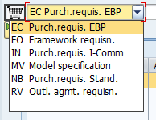
Az anyagigénylésünket egy bizonylat fogja tárolni, amely egy bizonylatrendszerben, bizonylatkörben helyezkedik el. Minden bizonylat mentés után egy egyedi számot fog kapni, amelynek segítségével transzparensen nyomonkövethetővé válnak. A bizonylat tulajdonságait pedig az őt leíró bizonylattípus beállításai fogják meghatározni. A legördülő menüben elérhető bizonylattípusok - kiválasztás esetén – meghatározzák egyrészt a bizonylat űtlaptáblázatának felépítését és szerkezetét (különösen az elérhető oszlopokat / mezőket), másrészt determinálják, hogy a bizonylat melyik számintervallumban fog elhelyezkedni. Ennek hátterében az áll, hogy SPRO-ban minden bizonylathoz tartozik egy előre definiált képernyőkép (Screen Layout), illetve egy bizonylatintervallum. A bizonylattípusok emellett meghatározhatják, hogy milyen típusú Account Assignment és Item Categoriek befogadására alkalmasak.
A PTE TTK-s IDES rendszerben az alapértelmezett az NB Standard PR.
Document Overview
A Document Overview ON-ra kattintva a képernyő baloldalán megjelenik egy hasáb. A hasábon lévő műveletek segítségével korábban elkészült, az anyagigénylés szempontjából releváns előzményeket tudunk látszólag betölteni. Eredményeim szerint azonban reálisan kizárólag korábbi beszerzés igénykés másolható át új anyagigénylésre. A funkció értelmét az a koncepció adja, amely szerint új beszerzési igényléshez felhasználhatóak korábban elkészített bizonylatokat is.

Purchase Order-ből, RFQ-ból, Conratcts-ból, Ütemezési megállapodásokból nem lehet átvenni adatokat új igénylésekhez (ez csak a Purchase Order esetében működik). Tehát csak a már korábban elkészített igénylés választható. Amennyiben nem a saját igényléseinket (My PR) választjuk, úgy egy összetett keresőfelület jön elő, amely érdemi segítséget jelent az egyes bizonylatok megtalásában. (Lásd videót)
Header
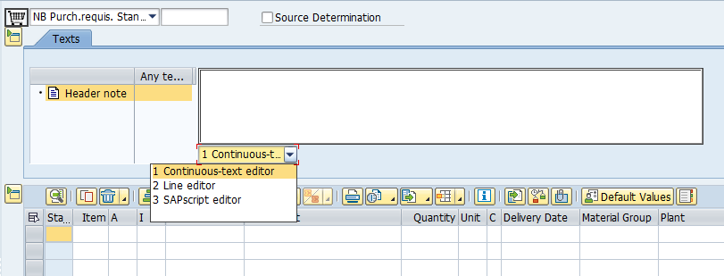
A Header-ben, tehát fejlécben tudunk megadni olyan információt, amely igénylésre, illetve az igénylés valamennyi / egyes tételeire vonatkozik. Az 1-es változatban folyamatos szöveget tudunk megadni, a 2-es változatban pedig sorokra bontott szöveget tudunk felvinni.
Tételnyilvántartó
Menüsáv ikonjainak szerepe:
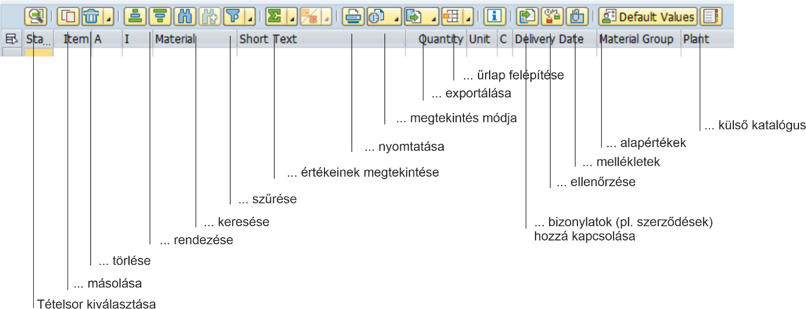

Alapadatok:
Material – anyag kódja I Short Text – anyag, rövid leírása I Quantity – mennyiség I Unit – mennyiség mértékegysége I Plant – üzem, ahová az anyagot igényeljük I Storage Location: az üzemhez tartozó raktárhely I Delivery date: szállítás naptári dátuma I Requested by: az igénylő neve, vagy kódja I Tracking No.: az igénylés nyomonkövetésének száma
Az anyagigénylést a következő objektumokkal lehet összekapcsolni: Purchase Group: Beszerzési csoport I Requested by: anyagigénylés kérelmezője I Tracking Number: tétel követési száma I Des. Vendor: javasolt szállító I Fixed Vendor: rögzített szállító I Purchase Org.: beszerzési szervezet I Agreement: szerződés I Item: a szerződés tételének sorszáma pl.: 10 I Info Record: beszerzési adatok.
Az Agreement-hez és az Info Record-hoz való hozzárendelés lényeges lehet, tekintettel arra, hogy az azokban foglalt kondíciók meghatározhatják az adott tétel tulajdonságait, pl.: árak és szállítási feltételek tekintetében. Később a Purchase Order (beszerzési megrendelés ezeket fogja átvenni).
Kitöltés sorrendje: először adjuk meg az anyag kódját, utána a Plant (üzemet). A kettő kombinációjából a program az anyagtörzs adataiból kitölti a többi mezők egy részét, szintén adjuk meg a Storage Location-t, majd a többi szükséges mezőt. Az itt megadott adatokat később átveheti többek között a Contract (szerződés nyilvántartó modul), valamint a Purchase Order (megrendelések).
Tételrészletező
Egyes tételek részletezésre szolgál
Az egyes tételek részletes adatainak megtekintéséhez az Item drop down-ból válasszuk ki az adott tételt, majd azt követően nyissuk meg az egyes űrlapokat. Az űrlapok részben a táblázatban szereplő oszlop mezőket tartalmazzák csoportosítva, néhány esetben a táblázatban nem szereplő mezők és kapcsolók is rendelkezésre állnak.
Material Data
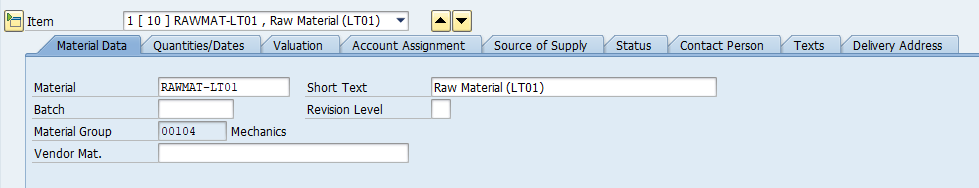
A Material Data űrlapon az anyag kódja, az anyag rövid neve, a sarzs (Batch), és az anyag csoportja szerepel. Ezek az adatok az anyagtörzsből töltödnek ki. A Vendor Material szabadszöveges mezőben a szállító nyilvántartásában szereplő anyagnevet és / kódot lehet megadni, ennek értelme abban az esetben van, ha a szállító adatbázisában más kóddal és névvel fut az anyag, mint a saját SAP rendszerünkben. (In most cases, the vendor uses a different number for the material than the one used in this system. The vendor's material number can therefore also be quoted in a purchase order for identification purposes. from: SAP help menü) A Batch esetében a sarzs menedzsmentről van szó, amelynek segítségével bizonyos szempontok szerint az egy kötegbe tartozó anyagok mozgása transzparensen nyomon követhető. (ehhez a részhez annyira nem értek, én az alábbi külső hivatkozásból indultam ki)
Mennyiség és dátumok (Quantity/Dates)
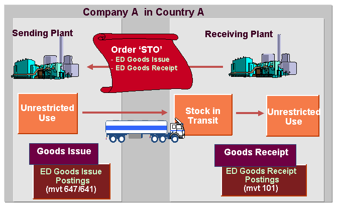
Az űrlapon három mennyiséget találunk. Az első az igénylendő mennyiséget, a második az ebből megrendelt mennyiséget, a harmadik a kettő különbözetét a nyitott mennyiséget tartalmazza. A Closed-el lehet lezárni az igénylést. A jobb oldali hasábban lehet megadni a tervezett szállítás időpontját, és az engedélyeztetés időpontját. A kérelem időpontja alapértelmezetten az a nap lesz, amikor az igénylést elkészítjük. Ezek alatt megadhatjuk a tervezett szállítás időt, illetve az áruérkeztetéshez szükséges időmennyiséget.
Értékelés (Valuation)

A Valuation űrlapon az anyagnak a mennyiségre / darabra vetített tervezett ára, pénzneme szerepel. Ennek értéke elsősorban az anyagtörzsből származhat. A Promotion alatt három kapcsoló szerepel. Az anyagérkeztetés (Good Receipt) aktiválásával azt jelezzük, hogy a tétel értékelése összefüggésben van a érkeztetéssel, a számlaérkeztetés (Invoice Receipt) estében, ha a számlaértkeztetéssel, a GR Non-Val. esetében, ha az olyan árut érkeztetünk, amelyet nem kell az ávételkor értékelnünk.
Kontírozás (Account Assignment)
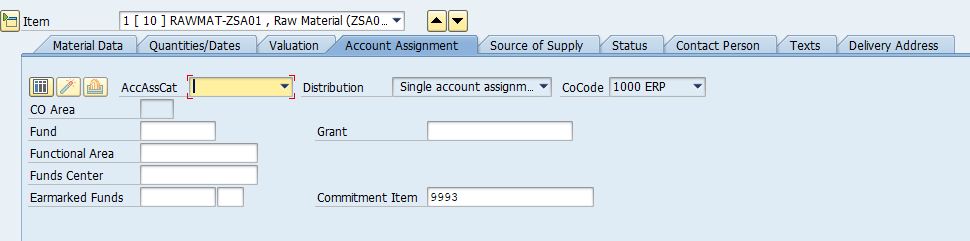
A kontírozás űrlap felépítését a legördülő listában elérhető kategóriák határozzák meg. Ennek informatikai alapját az adja, hogy SPRO-ban az egyes kategóriákhoz egyedi beállítások (űrlapfelépítések, mezőkészletek) tartoznak. Alapesetben, ha nem választunk kontírozási kategóriát (tehát az AccAssCat üres) akkor az igénylés a áru- és anyagkészletre fog vonatkozni. A Fund, Functional Area, Fund Center, Grant elsősorban az állami költségvetésből működő intézmények forrásgazdálkodásának adminisztrációját teszik lehetővé. Segítségükkel pl.: megadható, hogy adott igénylést milyen alapra kontírozzuk, illetve milyen támogatást használunk fel. A Commitment Item a kötelezettségvállalási, pénzügyi tételnek felel meg.
K Cost Center (költséghely)
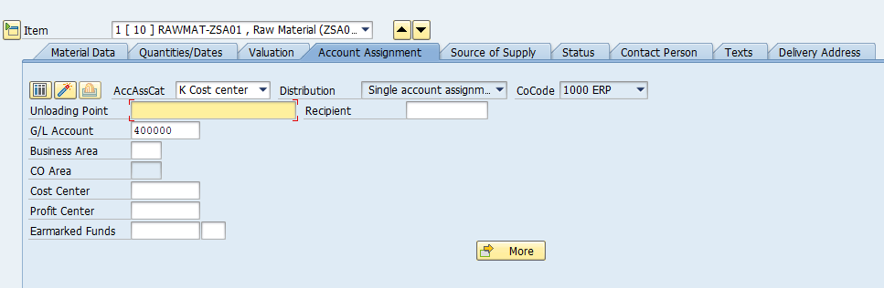
Költséghely kiválasztása elsősorban akkor indokolt, ha az anyagot, árut, vagy szolgáltatást közvetlenül költségként, pontosabban költségnemenként számoljuk el 5-ös számlaosztályban, és azonnal felhasználjuk. Az alapadatok tekintetében költséghelyet (Cost Center), a pénzügyi központot (Profit center), valamint az üzletágat (Business Area-t) adhatjuk meg. Az egyes objektumok összefüggésben állhatnak egymással a háttérbeállítástól függően, ezért pl.: a költséghely kitöltésével a pénzügyi központ és az üzletág is kitöltődhet automatikusan. Amennyiben költséghelyre adunk le beszerzési igényt, abban az esetben 5-ös számlaszámra fogjuk később könyvelni a beszerzésünket, egyúttal egy 6-os számvlteli költséghelyhez is hozzárendeljük azt. Az Unloading point mezőjében a kirakodás, illetve a felhasználás helyét tudjuk megadni, a mezőbe a költséghely fizikai elhelyezkedését célszerű megadni.
Amennyiben egy tételt több költséghely szerint szeretnénk felosztani, úgy válasszuk az első kockát, a többszörös konítrozás beállítását.

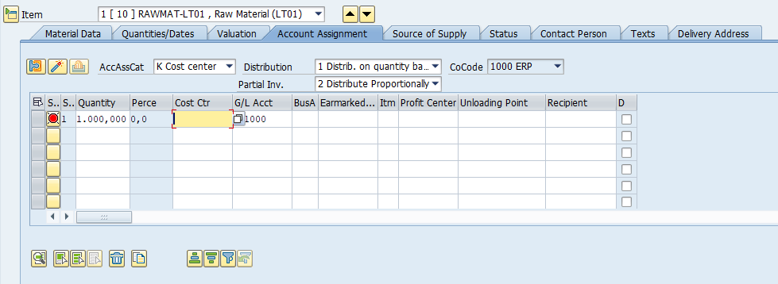
Amennyiben több költséghelyre szeretnénk kontírozni a beszerzendő tételt, úgy megosztás mezőben (Distribution) válasszuk ki a mennyiség, vagy a százalékos (arányos) formában való megosztást, és töltsük ki az alsó táblázatot.
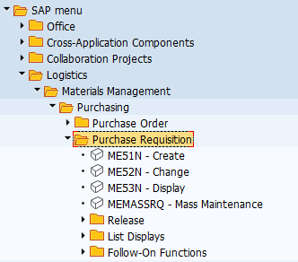
Ha az első sort kitötöttük, utána a Reapet on (második ikonnal) tudjuk másolni a sort.
Projekt
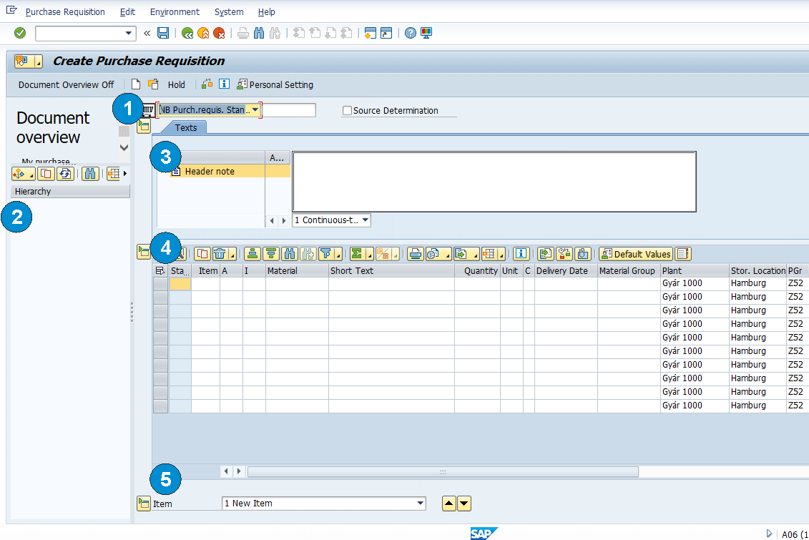
Ha a beszerzési igénylést projekthez szeretnénk kapcsolni, úgy a P Project-et kell kiválasztani. A legtöbb mező azonos lesz a költséghely űrlapjával, ugyanakkor a WBS Element és a Network új elemként jelenik meg. A két mező kitöltése lehetővé teszi, hogy beszerzési igénylésünket a projekt megfelelő szintjével, elemével tudjuk összekapcsolni. Egy projekt alapszintű felépítését szemlélteti az alábbi ábra.
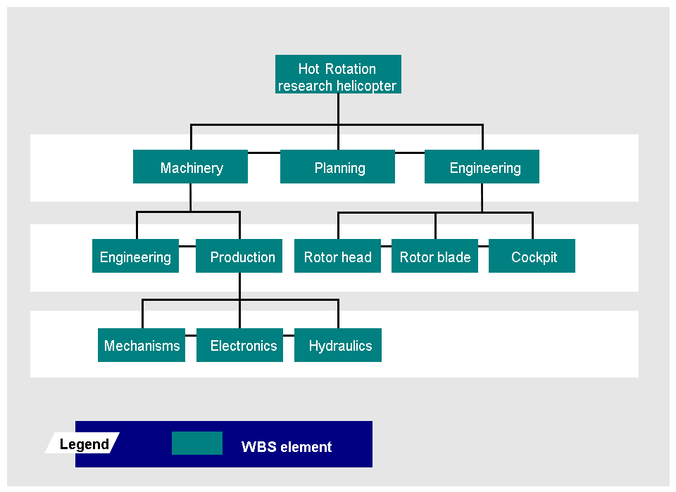
https://help.sap.com/viewer/5ecdd9085d344e6693e65fc60c3b5b0f/6.17.19/en-US/26d4b65334e6b54ce10000000a174cb4.html (2021. január 20.)
Az ábrán szereplő projekt esetében az egyes szintekhez tudunk anyagigényléseket rögzíteni.
Befejezetlen beruházás / Tárgyi eszköz (Asset)

Amennyiben tárgyi eszközt szeretnénk beszerezni, úgy az Asset-et válasszuk ki. A szokásos kontírozásos mezők mellett az igénylésünket rátudjuk vezetni egy / több befejezetlen beruházásra, vagy közvetlenül a tárgyi eszközre.
A beszerzési igény információ forrása (Source of Supply)
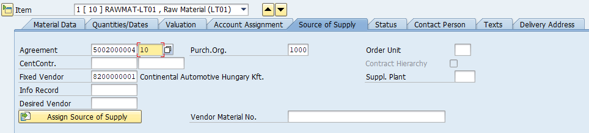
Beszerzési igényekhez rendelhetünk különböző forrásdokumentumokat (keretszerződéseket, központi szerződéseket, vagy infó rekordokat). Ezek kiválasztásával alapesetben megjelenik az a rögzített szállító is, amelyet az adott dokuemtum tartalmaz. Emellett megadhatunk javasolt szállítót is. A keretszerződés, keretmegállapodás (amely jellemzően valamilyen Outline Agreement objektum) esetében meg kell adni, hogy az igénylés a szerződés melyik tételére vonatkozik, ellenkező esetben nem lesz összefüggés az igényelt tétel és a szerződés tétele között. Ez alól az információs rekord kivétel, ugyanis az mindig egy adott anyagra vonatkozik, szemben a szerződésekre, amelyek több tételt is tartalmazhatnak. Lényeges, hogy ezt csak abban az esetben tudjuk megtenni, ha azok (szerződések, infó rekordok) már elkészültek. Emellett szintén meg lehet adni a beszerzési szervezetet. A jelentősége ennek a Purchase Order létrehozása során lesz, a PO az igénylés adott tételéhez kapcsolt szerződésből fogja a kondíciók egy részét, pl.: az árat, a szállítási feltételeket kiolvasni.
Status (a beszerzési igénylés státusza)

A Status űrlapon a Process Status (feldolgozás státusza), a Block ID (az anyagigénylés blokkolása), és a Block text (a blokkolás szöveges indoklása adható meg).
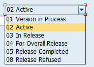
Az aktív legördülő menüből az anyagigénylés állapota tekinthető meg. 03 = engedélyeztetés alatt, 05 = engedélyeztetés teljesítve, 08 = engedélyeztetés visszautasítva.
Contact Person

Created by: a felhasználó neve, aki készítette (ez a bejelentkezési adatokból származik)
Created Indicator: a létrehozás módjára utal

Amennyiben manuálisan hozzuk létre, úgy a Realtime (valós idejű, manuális létrehozás) lesz az alapértelmezett, B) esetben az anyagszükségletek tervezése hozza létre automatában, az F esetében a gyártás elrendelés hozza létre automatában.
1.2.2. Enviroment

Az Enviroment menüsorban lehet a tételhez kapcsolt rekordokat / objektumokat megtekinteni, illetve különböző kimutatásokat (pl.: készletek, szállítók értékeléseit) lekérni. A menüsor előnye, hogy külső tranzakciók nélkül is tudunk az adott tételhez tartozó objektumokat menedzselni.
Item Changes – Ez a tétel egyes elemeinek módosításait mutatja történeti megközelítésben (régi érték –> új érték) kronológiailag.

Material -> A tétel, illetve az adott anyag törzsadatait nyitja meg

Material Stock -> Az adott anyagból rendelkezésre álló mennyiséget és elhelyezkedését mutatja meg vállalat \ gyár \ tárolási hely szerint:
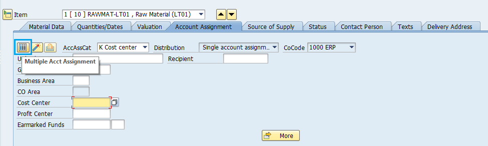
Vendor -> A szállító törzsadatainak egy részét (alapadatokat, beszerzési adatokat) mutatja

Vendor Evaluation -> A szállító automata értékelését nézhetjük meg:
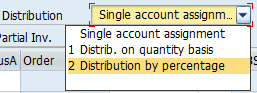
Info Record -> A tételhez kapcsolódó Infó Rekordot nyitja meg

Contract – a tételhez kapcsolódó szerződést lehet megnézni / módosítani
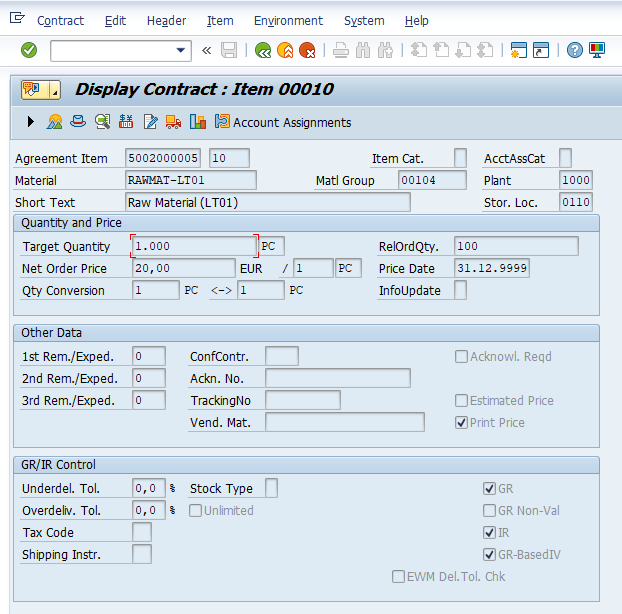
Quota Arrangement -> A tételhez tartozó kvótamegállapodásokat lehet megtekinteni / módosítani
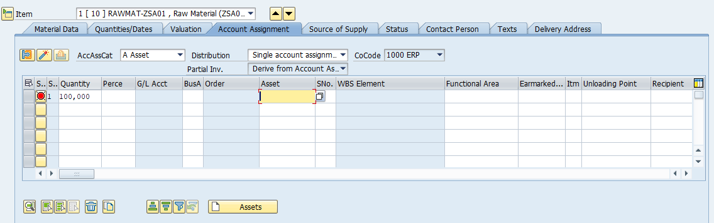
Az alábbi videó az egyedi és csoportos megjelenítés és módosítás lehetőségeit mutatja be.